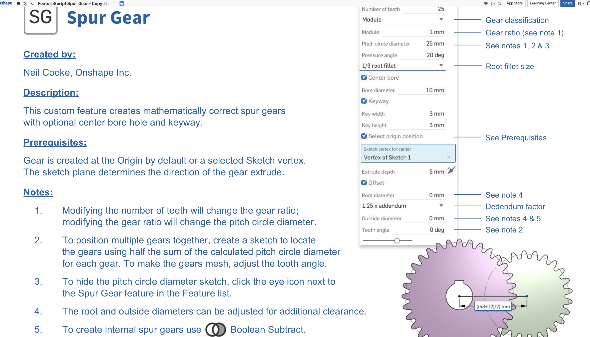

Assignment 4: Moving Parts

Steps Taken:
I wanted to work with gears for this assignment and had really high hopes to make a rotating bear with a rastered tutu and facial expressions, however my time and skills demanded a more simplified approach.

I built the base in OnShape and thought about using a carriage bolt to attach the gears to the base, but found that was overcomplicated when a simle extruded cylinder would work well. The base has a thickness of 3mm. I built the rectangle first, extruded the shape and then built a second rectangle that I used to take out the interior.
I then created two smaller circles on top and extruded them from the surface. At first the small cylinders on top were hollow, but I played around with the extrusion tool until I got them to be solid.Then I used the dimensioning tool to set their distance apart to align with the distance from my gears origin.

I used the featurescript spur gear generator in OnShape and heavily edited the gears to get what I wanted. They start with several gears. I deleted out the ones I didn't want and started to edit the ones I wanted to keep. I adjusted size, position, and thickness.
Again, once I had two gears left I started editing their thickness and size. This caused them to overlap and merge, as their positions were tied to their radius and that did not float with the size adjustment. I then needed to locate the area of the sketch where I could change the distance between the gears by using half the sum of the calculated pitch circle diameter for each gear.
I loaded them all on one print bed, thanks Cindi Feng for confirming that the Dremel printers could handle this.
One hour in
After about seven hours of printing the three parts, success!!!
OnShape for gears: https://cad.onshape.com/documents/8285f2234b72e0090a347153/w/32bff3bd52ea2ad13210a4cd/e/b13a738acf8b97a8d8e89acb OnShpae for box: https://cad.onshape.com/documents/f5c4e51be337b1e897f3adb5/w/f5b7ae56e84557904512205f/e/78ab6ff73ff9e980051c4053
These are my stl files